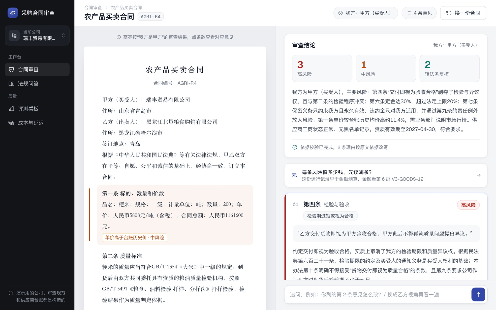
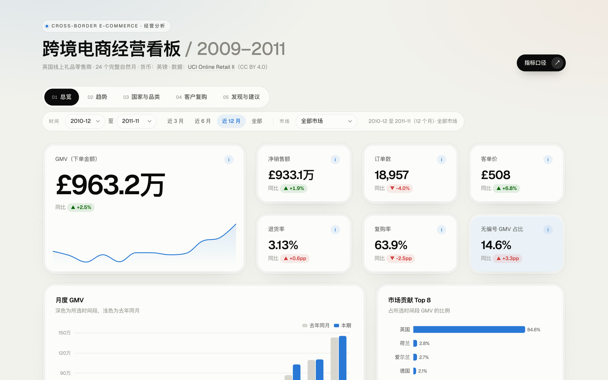

以上全部是离线评测数字，评测合同、公司和台账均为构造数据；没有真实用户和上线数据。真实用户试用的方案见下文，结果出来后更新。
用户与痛点
很多中小企业没有专职法务，采购、行政和业务负责人看合同主要靠经验和对方给的模板 假设。坑往往是固定的几类，单看都不起眼，签了出问题才发现。
为谁做
签合同前自己先过一遍，决定要不要找对方改、要不要报给领导或律师。最在意：快、看得懂、改法能直接用。
合同量大时先让系统初筛，自己只看高风险和系统拿不准的部分。最在意：不漏报、依据可查、能对照公司规范。
常见的坑
现有做法为什么不够
- 请外部律师逐份审：贵、慢，几万元以下的小合同不值得 假设
- 贴进通用聊天机器人：会给意见，但不站在我方立场，引用的法条可能是编的，也不知道公司自己的审批规定。
- 公司内部审查规范：多数写成文件放着，业务人员签合同时不会逐条去对 假设
所以产品要做到的三件事
- 站在我方立场，看不出立场先问，不猜。
- 每条意见都能点开原文核实，法条和本公司规范都算。
- 拿不准的不删，标“转法务复核”交给人。
高保真原型：5 个关键页面
流程按 PRD 第 4 节：提交合同、判断立场、逐条意见、看依据原文、追问。画面里的合同、意见和依据都来自项目的真实运行记录，不是编的示例。
PRD 摘要
一句话：签合同之前，帮没有专职法务的业务人员把对我方不利的条款找出来，说清楚为什么不利、依据是哪条法律或公司规定、应该怎么改；拿不准的交给法务。
做
- 7 类常见商业合同：工业品买卖、农产品买卖、加工承揽、仓储委托、数据委托处理、数据产品开发、数据供应
- 11 类风险，从违约金不对等到单价高于台账均价
- 依据：《民法典》、合同编通则解释、《民事诉讼法》、官方示范文本、公司审查规范
不做
- 不出具法律意见，不替代律师和法务
- 不做起草、电子签、合同台账和履约提醒
- 不审诉讼仲裁文书和建设工程等专业合同
关键取舍
| 问题 | 选择 | 依据 |
|---|---|---|
| 漏报和误报哪个更重要 | 优先不漏报 | 漏掉一个高风险条款的代价远大于多看一条误报。改进后检出 100%，代价是误报回升、成本约 1.75 倍，接受 |
| 依据核实不了怎么办 | 不删除，标转法务复核 | 删掉会造成漏报。无依据又没标转人工的意见从 6.6% 降到 0.8% |
| 看不出我方立场 | 先反问 | 立场判断错了，整份意见都会反过来 |
| 公司规范怎么用 | 每家公司只能查到自己的 | 不同公司红线不同；修复过一次跨租户读数据的漏洞 |
| 单 Agent 还是多 Agent | 首轮审查多 Agent，追问单 Agent | 干净合同上的误报意见从 13 到 14 条降到 4 到 6 条，检出持平 |
竞品分析：11 个产品，5 条观察
信息来自官网、官方文档和公开报道，没有实际试用；“未查到”只代表公开资料里没找到。
小团队缺少低门槛入口
海外产品都要报价；国内只查到 iTerms 公开价格，最低 6980 元/年。按份付费的只有通义法睿，但它是给开发者的 API。
依据可追溯还不是普遍卖点
公开资料里几乎都没写明会展示法条原文，通义法睿的 API 输出也没有法条字段。
按公司标准审合同门槛高
自定义审查规则多在高档套餐或私有版里。
国内多是电子签或合同管理平台的附带功能
要先用它的签约平台；独立、即开即用的审查工具较少。
明确能选立场的很少
公开资料里写明能选立场的只有 iTerms 和通义法睿。
对比对象：法大大 iTerms、e签宝合同 Agent、契约锁、幂律 MeCheck、通义法睿、iCourt AlphaGPT、Harvey、Spellbook、LegalOn、Ironclad、Luminance。差距也写在报告里：没有真实用户、没有 Word 插件和合同管理流程、覆盖范围小于商业产品。
完整竞品分析（含对比表和来源链接）指标体系
北极星看用户真的用上了多少意见；离线指标管质量，在线指标等试用，护栏指标守住不能出的错。当前值都来自构造数据。
每份合同被采纳的高/中风险意见数
用户标“有用”或照着修改建议改了的意见数。当前没有值，需要试用后定基线。
为什么不用“检出率”：检出再多，用户看不懂、不敢用，等于没审。采纳数同时反映准确、可读和改法可用。
离线（评测集）
在线（试用）
护栏
评测结论
两套构造评测集：v1 是 48 份合同、73 处植入风险；v1 检出触顶后又做了 v2，60 份长合同、75 处风险，专门把风险藏在不相关条款里、换说法、拆成两条合起来看、数值刚越过红线。
v2 难评测集检出率
原版多 Agent 按标题分工，漏掉定义条款和跨组组合；改成定义条款发给各组、关键词兜底、逐项对照红线后，两次都是 75/75。
无依据又没标转人工的意见
依据校验：先查点名的条文有没有真被检索到，再逐条核对；依据不足的转人工，不删除。误拦 2.0%。
干净合同上的误报意见
首轮改用多 Agent（主审分派，三个专职审查员并行），检出不变。
追问回指“第 k 条意见怎么改”
不带上一轮历史时 0/8；“换成乙方视角再看一遍”6/6 正确切换。
模型选型
DeepSeek 检出、类型、依据与 Haiku 持平，但精确率低约 6 个点、单份花费约 2.4 倍；默认 Haiku，DeepSeek 留作私有化部署的备选。
这些数字的边界
- 评测集是自己构造的，有“自己出题自己考”的风险；缓解办法是每类风险多种写法、Agent 看不到植入规则、另报未参与调试的留出集。
- v2 改进后误报回升：干净合同误报 76.7% 和 83.3%，精确率 62.6% 到 65.7%，还没到 75% 的目标，是下一步要解决的问题。
- 干净合同只有 12 份（v1），同一份代码跑两次误报是 66.7% 和 83.3%，波动大。
- 真风险里约一半被模型自己标了转人工，判断偏保守；合同场景的检索 Recall@5 只有 63.2%。
用户试用方案
离线数字来自构造数据，真实合同的写法更多样，线上效果可能明显更低。试用要回答 PRD 里 5 条待验证的假设，并拿到第一批在线指标。
试用结果还没出来，这里只写方案，不写结果招募 5 到 10 人，一周
- 用户会在签合同前主动用工具过一遍
- 看得懂风险理由，愿意直接用修改建议去谈
- 真实合同上的误报率用户能接受
- “依据原文可点开”和“接入公司规范”是在意的差异点
- 审完一份合同的总时间明显比自己看短
流程与指标
- 开始前10 分钟远程演示，说明能做什么、不能做什么；说明合同会发给模型服务商、建议先打码，同意的人才参加
- 一周内每人审 2 到 3 份合同，每条意见打标：有用 / 没用 / 不是风险 / 看不懂；每份填一次单份反馈
- 结束后总体问卷，挑 3 到 4 人做 20 分钟访谈
- 之后每条误报和漏报回到原文归类，挑一两类改；真实写法打码后补进评测集，改前改后各跑一次
第二个案例：MetricLens 中文问数
业务人员用中文提问，系统写 SQL、在只读库上执行、返回答案和图表。重点不是功能多，而是每个选型都在同一批题上做了对照。
选型靠实验，收益算清楚
评测用 BIRD 500 题和模拟电商库；数字和运行 ID 都登记在仓库里。

第三个案例：跨境电商经营分析看板
接着 MetricLens 的结论往下做：既然问数难在口径，就从产品和数据的角度把"口径怎么定"完整走一遍。用 UCI 公开的英国跨境礼品电商两年数据（约 107 万行、40 多个国家），先写指标定义，再从经营问题推出 5 页看板。
先定口径，再出图
数字由脚本从同一份数据计算，看板和文档读的是同一个结果文件；时间窗口为近 12 个月（2010-12 至 2011-11）。

数据为公开数据集（Chen, D., 2019, UCI Online Retail II, CC BY 4.0），只有一家公司两年的数据，没有成本数据，结论用于展示分析方法。
我在这几个项目里做了什么
都是个人项目，从找问题到做出能跑的产品、再到用评测说话，由我一个人完成。